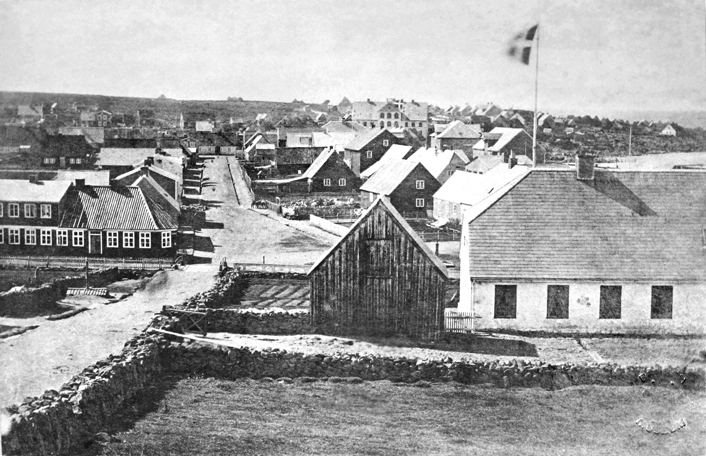

According to legend, the first permanent Norse settlement in Iceland was established at Reykjavík by Ingólfr Arnarson around the year AD 870, as described in the Book of Settlement. Ingólfr is said to have decided the location of his settlement using a traditional Norse method: when land was in sight, he cast his high seat pillars overboard and promised to settle where the gods decided to bring them ashore. Two of his slaves then searched the coasts for three years before finding the pillars in the bay which eventually became the site of Reykjavík.
The name is of Old Norse origin, derived from the roots reykr ('smoke') and vík ('bay'). The name is said to be inspired by steam rising from hot springs in the region. The original name was Reykjar-vík, with an "r" suffix for the genitive singular of reykr; the modern version reykja- uses the genitive plural. The name's meaning is still transparent in modern Icelandic. The name originally referred to both the bay on the northern shore of the modern city centre, between Örfirisey and Laugarnes, as well as the estate and farm of Ingólfr Arnarson. This form of the name fell out of use shortly after settlement, and the estate was referred to as Vík á Seltjarnarnesi until the name Reykjavík was revived when urban development began centuries later. The name has been translated as Bay of Smoke in English language travel guides, or variations thereof, such as Smoky Bay, Smoke Cove, Steam Bay, etc.
The site of the modern city centre was farmland until the 18th century. In 1752, King Frederik V of Denmark donated the estate of Reykjavík to the Innréttingar [is] corporation. The leader of this movement was Skúli Magnússon . In the 1750s, several houses were built to house the wool industry, which was Reykjavík's most important employer for a few decades and the original reason for its existence. Other industries were undertaken by the Innréttingar, such as fisheries, sulphur mining, agriculture, and shipbuilding. The Danish Crown abolished monopoly trading in 1786 and granted six communities around the country an exclusive trading charter. Reykjavík was one of them and the only one to hold on to the charter permanently. 1786 is thus regarded as the date of the city's founding. Trading rights were limited to subjects of the Danish Crown, and Danish traders continued to dominate trade in Iceland. Over the following decades, their business in Iceland expanded. After 1880, free trade was expanded to all nationalities, and the influence of Icelandic merchants started to grow.
Icelandic nationalist sentiment gained influence in the 19th century, and the idea of Icelandic independence became widespread. Reykjavík, as Iceland's only city, was central to such ideas. Advocates of an independent Iceland realized that a strong Reykjavík was fundamental to that objective. All the important events in the history of the independence struggle were important to Reykjavík as well. In 1845 Alþingi, the general assembly formed in 930 AD, was re-established in Reykjavík; it had been suspended a few decades earlier when it was located at Þingvellir. At the time it functioned only as an advisory assembly, advising the king about Icelandic affairs. The location of Alþingi in Reykjavík effectively established the city as the capital of Iceland. In 1874, Iceland was given a constitution; with it, Alþingi gained some limited legislative powers and in essence became the institution that it is today. The next step was to move most of the executive power to Iceland: Home Rule was granted in 1904 when the office of Minister for Iceland was established in Reykjavík. The biggest step towards an independent Iceland was taken on 1 December 1918 when Iceland became a sovereign country under the Crown of Denmark, the Kingdom of Iceland. By the 1920s and 1930s, most of the growing Icelandic fishing trawler fleet sailed from Reykjavík; cod production was its main industry, but the Great Depression hit Reykjavík hard with unemployment, and labour union struggles sometimes became violent.
On the morning of 10 May 1940, following the German occupation of Denmark and Norway on 9 April 1940, four British warships approached Reykjavík and anchored in the harbour. In a few hours, the allied occupation of Reykjavík was complete. There was no armed resistance, and taxi and truck drivers even assisted the invasion force, which initially had no motor vehicles. The Icelandic government had received many requests from the British government to consent to the occupation, but it always declined on the basis of the Neutrality Policy. For the remaining years of World War II, British and later American soldiers occupied camps in Reykjavík, and the number of foreign soldiers in Reykjavík became about the same as the local population of the city. The Royal Regiment of Canada formed part of the garrison in Iceland during the early part of the war. The economic effects of the occupation were positive for Reykjavík: the unemployment of the Depression years vanished, and construction work began. The British built Reykjavík Airport, which remains in service today, mostly for short haul flights (to domestic destinations and Greenland). The Americans, meanwhile, built Keflavík Airport, situated 50 km (31 mi) west of Reykjavík, which became Iceland's primary international airport. In 1944, the Republic of Iceland was founded and a president, elected by the people, replaced the king; the office of the president was placed in Reykjavík.
In the post-war years, the growth of Reykjavík accelerated. An exodus from the rural countryside began, largely because improved technology in agriculture reduced the need for manpower, and because of a population boom resulting from better living conditions in the country. A once-primitive village was rapidly transformed into a modern city. Private cars became common, and modern apartment complexes rose in the expanding suburbs. In 1972, Reykjavík hosted the famous world chess championship between Bobby Fischer and Boris Spassky. The 1986 Reykjavík Summit between Ronald Reagan and Mikhail Gorbachev underlined Reykjavík's international status. Deregulation in the financial sector and the computer revolution of the 1990s again transformed Reykjavík. The financial and IT sectors are now significant employers in the city. The city has fostered some world-famous musicians and artists in recent decades, such as Björk, Ólafur Arnalds and bands Múm, Sigur Rós and Of Monsters and Men, poet Sjón and visual artist Ragnar Kjartansson.